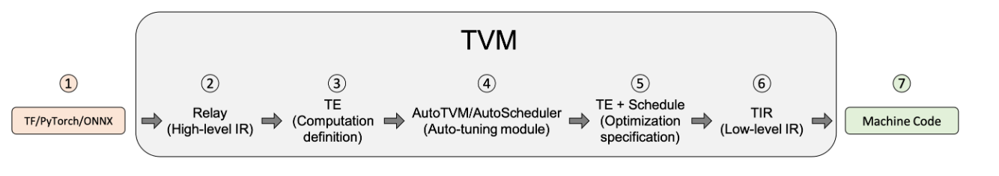

# TVM-UserTutorial
自 2022 年 10 月份选择大创项目 —— 基于 TVM 实现针对国产 AI 芯片的深度算子库项目以来。花了许多时间弄懂什么是 TVM，项目的定位是什么，我们要做的到底是什么事。也经历了期末复习周，由于疫情延期期末考到开学考试，以及小组成员陆续阳性等等事。导致我们的项目在开题答辩之后迟迟没有开始。本学期初在学习了计算系统基础以及编译原理的导论之后，我对 TVM 的认识更加深刻了，项目也重新启动 (2023/2)。
# Introduction
原文链接： Introduction — tvm 0.11.dev0 documentation (apache.org)
TVM 隶属于 Apache 基金会，是开源项目。定义为一个可应用于各种 GPU CPU 深度学习加速器的深度学习编译器。
# An Overview of TVM and Model Optimization

主要思想： 专用 --> 通用 --> 专用 不同框架转化为统一的 IR 表示，在根据模型所部署的不同硬件的类型转化为对应的字节码 。
TVM 采用了多级 IR 的设计，而且每级之间的转化都会经过各种优化，比如切割子图，图优化，以及 AutoTVM/AutoScheduler (这两个是 TVM 带有的自动优化模块) 进行最优调度的选择。
TVM 支持的后端有 LLVM、NVCC 等，最重要的是可以支持 Embedded and specialized targets, 但是要使用 TVM 提供的 BYOC 功能，也是我们项目最需要实现的部分。
# compiling and optimizing a Model with TVMC
原文链接：compiling and optimizing a model with TVMC
大部分操作已在虚拟机中运行成功
日期：3/1
这章主要熟悉了 TVMC 的简单使用。官方文档提供了一个预训练的 ResNet-50 v2 模型。为 TVM 的 runtime 编译此模型，并在这个模型上跑了一个真实的猫猫图片，得到运行结果。文章还包括了在实际的 CPU 上用 TVM 调优（tune）模型，并且使用 TVM 收集的 tuning data 重编译出一个优化的模型，重新跑一遍优化的模型，并与之前模型的表现进行对比（这部分较难）。
TVMC 是 TVM 的命令行工具，让你能在命令行中使用 TVM，C 表示 command line 的意思。
TVMC 支持 Keras, ONNX, TensorFlow, TFLite and Torch 构建的模型，本章模型用的是 onnx。
# 编译模型
tvmc compile \ | |
--target "llvm" \ | |
--input-shapes "data:[1,3,224,224]" \ | |
--output resnet50-v2-7-tvm.tar \ | |
resnet50-v2-7.onnx | |
# 编译出来一个 tar 文件 | |
mkdir model | |
tar -xvf resnet50-v2-7-tvm.tar -C model | |
ls model | |
#解压后看看有什么 |
有三个东西：
mod.so : 就是那个模型，表现为一个 TVM runtime 能运行的 c++ 库
mod.json : a text representation of the TVM Relay computation graph.
mod.params: a file containing the parameters for the pre-trained model.--
编译时选择恰当的命令行选项能大大改变编译性能
# 用 TVMC 运行模型
为了对模型进行有效输入 要将预备的输入进行一些预处理.TVM 采用.npz 格式文件作为模型输入和输出，这是一个受良好支持的 Numpy 文件格式。
这里文章用一个 python 脚本预处理了猫猫图片（具体见原文），得到了一个 imagenet_cat.npz。
tvmc run \ | |
--inputs imagenet_cat.npz \ | |
--output predictions.npz \ | |
resnet50-v2-7-tvm.tar |
同样，这个文件也不是人能看懂的，原文提供了一个后处理脚本，把这个文件转化为人能看懂的结果。（见原文）
结果如下：
# class='n02123045 tabby, tabby cat' with probability=0.610553
# class='n02123159 tiger cat' with probability=0.367179
# class='n02124075 Egyptian cat' with probability=0.019365
# class='n02129604 tiger, Panthera tigris' with probability=0.001273
# class='n04040759 radiator' with probability=0.000261
# 自动调优模型
TVM 的调优是根据具体硬件对模型进行优化，使其在给定目标上运行的更快。调优不会影响预测准确性，只会影响性能！
演示：
tvmc tune \ | |
--target "llvm" \ | |
--output resnet50-v2-7-autotuner_records.json \ | |
resnet50-v2-7.onnx |
如果为 ——target 指定一个更具体的目标能得到更好的结果，如在 i7 处理器上使用 --target llvm-mcpu=skylake
TVMC 将对模型的参数空间进行搜索，尝试不同的算子配置，并选择在您的平台上运行最快的配置。虽然这是一个基于 CPU 和模型运算的引导搜索，但仍然需要几个小时才能完成搜索。此搜索的输出将保存到 resnet50-v2-7-autotuner_records.json 文件中，稍后将用于编译一个优化的模型。
# 使用调优数据编译优化模型
编译器将使用调优结果为指定的目标上的模型生成高性能代码。编译命令为 tvmc compile --tuning-records。现在已经收集了模型的调优数据，我们可以使用优化后的算子重新编译模型，以加快计算速度。
tvmc compile \ | |
--target "llvm" \ | |
--tuning-records resnet50-v2-7-autotuner_records.json \ | |
--output resnet50-v2-7-tvm_autotuned.tar \ | |
resnet50-v2-7.onnx |
与之前作对比，重复 100 此次。平均性能快 47%。
# Getting Starting using TVMC Python: a high-level API for TVM
原文链接： [Getting Starting using TVMC Python: a high-level API for TVM](Getting Starting using TVMC Python: a high-level API for TVM — tvm 0.11.dev0 documentation (apache.org))
日期：3/2
这章主要讲的是在 python 文件中怎么使用 tvmc。
- 导入：
from tvm.driver import tvmc - 把模型转化为 Relay 表示：
model = tvmc.load('my_model.onnx') - 编译：
package = tvmc.compile(model, target="llvm") - 运行：
result = tvmc.run(package, device="cpu")
可以加入第 1.5 步：调优
tvmc.tune(model, target="llvm") | |
tvmc.compile(model, target="llvm", tuning_records = "records.log") # records.log 获取见下文如何保存调优结果 |
# 附加功能
可以在每一步都把中间结果保存下来。比如保存模型：在第一步后面 model.save(desired_model_path)
还能保存 package, 调优结果等